Balkendiagramm der afrikanischen Bevölkerung
BarGraph-African-Population
Zusammenfassung
In diesem Tutorial soll ein Diagramm erstellt werden, das die Verteilungen der afrikanischen Bevölkerung für 2010 vs. Prognosen für 2050 vergleicht.
- 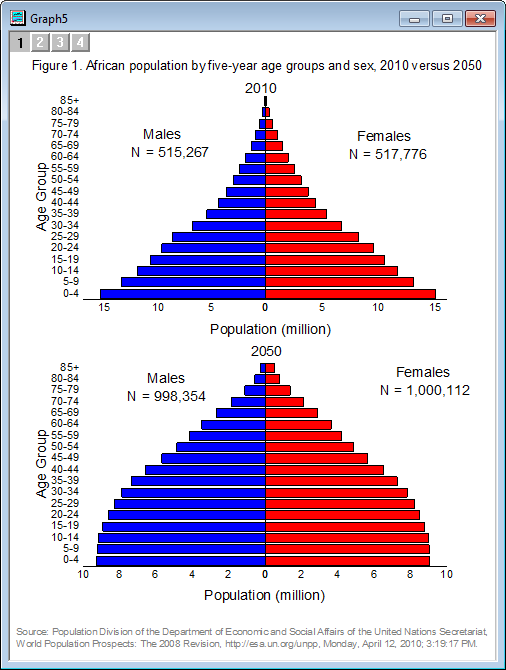
Origin-Version mind. erforderlich: Origin 2015 SR0
Was Sie lernen werden
Dieses Tutorial zeigt Ihnen, wie Sie:
- ein Diagramm mit Daten in anderen Spalten duplizieren,
- eine Achsenskalierung festlegen, um ein Balkendiagramm umzudrehen,
- Diagramme zusammenfügen.
Schritte
Um dieses Diagramm zu erstellen, müssen Sie vier getrennte Balkendiagramme erstellen, diese benutzerdefiniert anpassen und zu einem Diagramm zusammenfügen.
Quellbalkendiagramme mit Hilfe der Funktion Stapelzeichnen vorbereiten
- Öffnen Sie eine leere Origin-Arbeitsmappe und importieren Sie die Datendatei African_Population.dat unter <Origin-Verzeichnis>\Samples\Graphing. (Sollte sich die Datei nicht in Ihrer Origin-Installation befinden, laden Sie die gezippte Datendatei von dem ftp-Server herunter.)
- 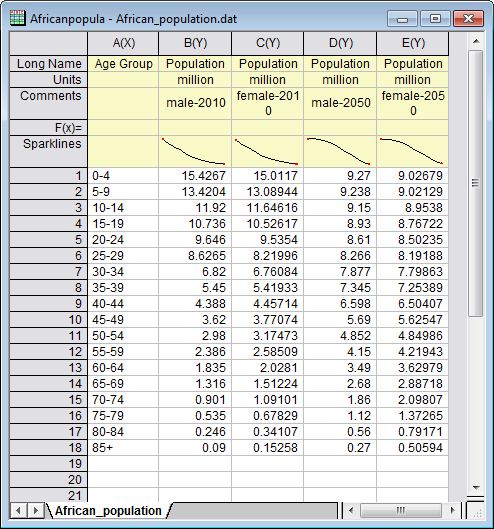
- Markieren Sie Spalte B und wählen Sie Zeichnen: Einfache 2D: Balkendiagramm, um ein Balkendiagramm zu erstellen. Verwenden Sie die Schaltfläche Füllfarbe
 auf der Symbolleiste Stil, um die Füllfarbe auf Rot zu setzen.
auf der Symbolleiste Stil, um die Füllfarbe auf Rot zu setzen.
- Der nächste Schritt besteht in der Duplikation ähnlicher Diagramme aus den anderen drei Spalten. Klicken Sie mit der rechten Maustaste auf die Titelleiste des Diagrammfensters und wählen Sie Duplizieren (Stapelzeichnen) im Kontextmenü:
- 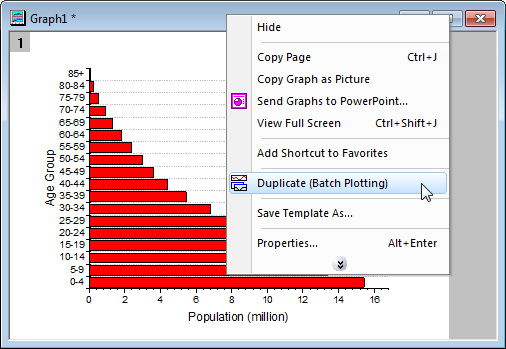
- Wählen Sie im aufgerufenen Dialog die Option Spalte in der Auswahlliste Zeichnung stapeln mit, halten Sie die Strg-Taste gedrückt und klicken Sie auf alle drei Spalten C, D, E, um sie auszuwählen. Klicken Sie auf OK:
- 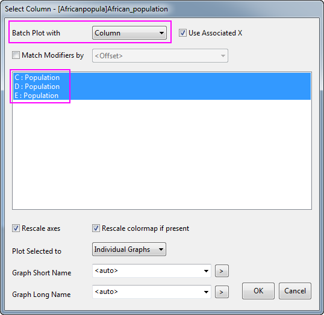
- Es werden drei entsprechende Diagramme erstellt (Wenn eine Erinnerungsmeldung angezeigt, die Sie fragt: Möchten Sie die Achsen neu skalieren, damit alle Daten angezeigt werden?, wählen Sie Ja und klicken auf OK).
- Jetzt haben Sie vier Balkendiagramme der vier Gruppen: male-2010, female-2010, male-2050, female-2050.
- 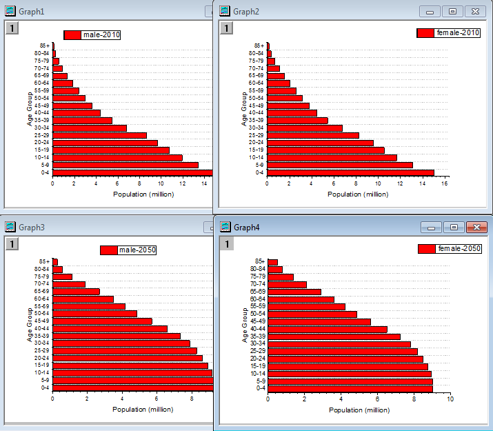
Balkendiagramme benutzerdefiniert anpassen
Im Folgenden passen Sie die vier Balkendiagramm einzeln benutzerdefiniert an.
- Als Erstes wird Graph1 benutzerdefiniert angepasst (d.h. das Diagramm, dessen Legende mit male-2010 beschriftet ist).
- Klicken Sie zum Öffnen des Dialogs Details Zeichnung doppelt auf die Datenzeichnung. Erweitern Sie den Knoten Layer1 im linken Bedienfeld und markieren Sie den Unterknoten. Ändern Sie im rechten Bedienfeld auf der Registerkarte Muster die Farbe der Füllung in Blau. Klicken Sie auf OK, um die Farbeinstellung anzuwenden, und schließen Sie den Dialog.
- Klicken Sie doppelt auf die Y-Achse (die horizontale Achse im Balkendiagramm), um den Dialog Achsen zu öffnen. Legen Sie auf der Registerkarte Skalierung für die Y-Achse folgende Werte fest: von = 17, bis = 0 sowie Wert der Inkremente der großen Hilfsstriche = -5:
- 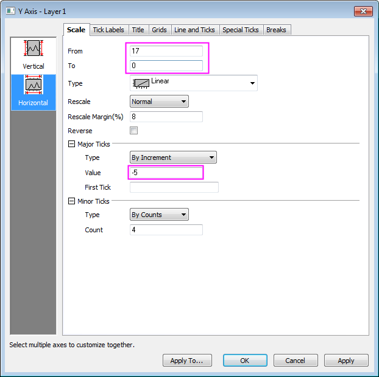
- Klicken Sie auf das Symbol Vertikal im linken Bedienfeld, gehen Sie zur Registerkarte Gitternetze der X-Achse und deaktivieren Sie das Kontrollkästchen Zeigen im Zweig Nebengitternetzlinien, um die Nebengitternetzlinien auszublenden. Klicken Sie auf Anwenden.
- 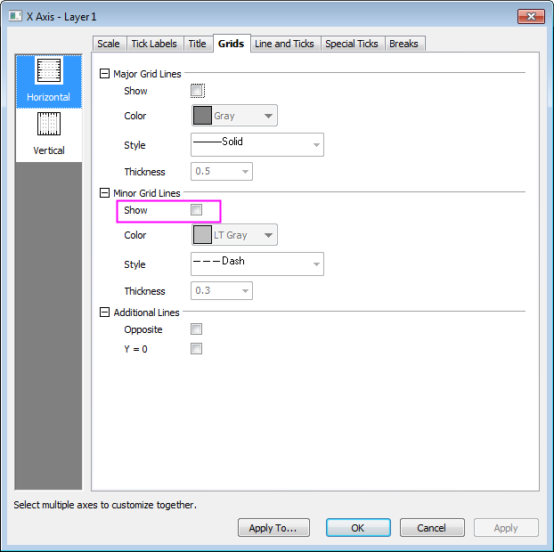
- Wechseln Sie zur Registerkarte Linie und Hilfsstriche und setzen Sie den Stil unter Kleine Hilfsstriche auf die Option Kein:
- 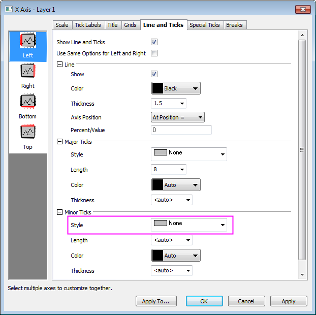
- Jetzt blenden Sie die Nebengitternetzlinien und kleinen Hilfsstriche für alle anderen Diagramme aus. Klicken Sie auf die Schaltfläche Anwenden auf..., um den Dialog Anwenden auf aufzurufen, und aktivieren Sie die Kontrollkästchen neben Hilfsstriche und Gitternetzlinien. Wählen Sie in den jeweiligen Auswahlmenüs für beide die Option Alle Fenster im Ordner und klicken Sie auf OK, um die Einstellungen anzuwenden. Die Nebengitternetzlinien und kleinen Hilfsstriche in allen Diagrammfenstern im gleichen Ordner des Projekt Explorers werden nun ausgeblendet:
- 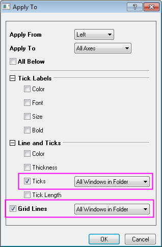
- Als Nächstes werden die Skalierungen der Y-Achsen für Graph2 (female-2010) und Graph3 (male-2050) benutzerdefiniert angepasst. Öffnen Sie den Dialog Achsen für jedes Diagramm und legen Sie die Achsenskalierungen entsprechend der Screenshots unten fest:
- 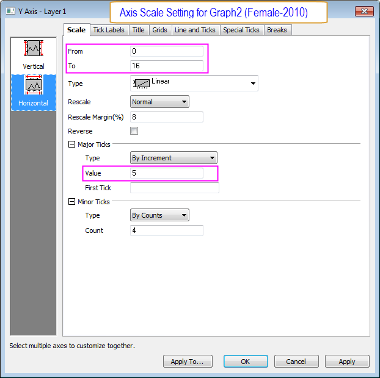
- 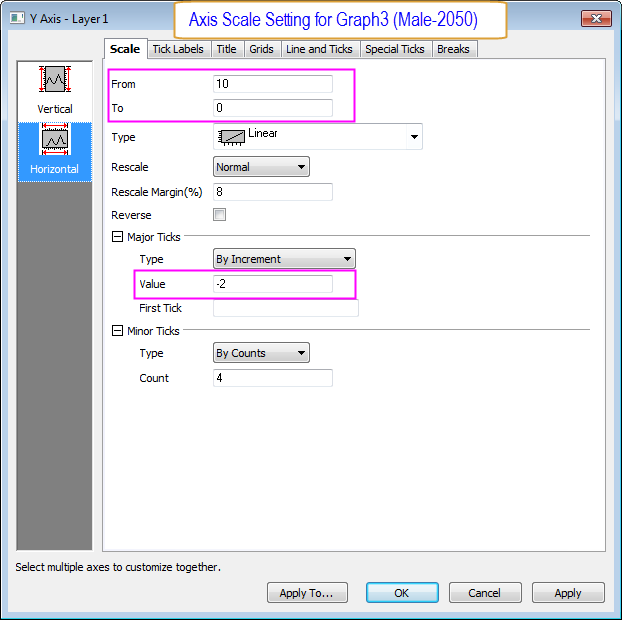
- Klicken Sie doppelt auf die X-Achse von Graph4, um den Dialog Achsen zu öffnen. Legen Sie die Skalierung der X-Achse, wie im Screenshot zu sehen, fest:
- 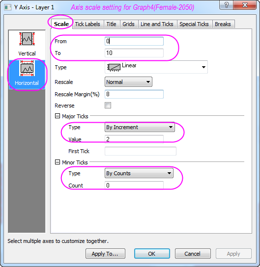
- Klicken Sie doppelt auf die Datenzeichnung von Graph3 (male-2050) und öffnen Sie den Dialog Details Zeichnung. Erweitern Sie den Knoten Layer1, um den Unterknoten zu markieren, klicken Sie auf die Registerkarte Muster im rechten Bedienfeld und setzen Sie die Farbe für Füllung auf Blau.
- Markieren Sie für Graph2 (female-2010) und Graph4 (female-2050) die Hilfsstrichsbeschriftung für die X-Achse (vertikale Achse) und drücken Sie die Taste Entfernen, um sie zu löschen. Entsprechend entfernen Sie auch die Achsentitel für sowohl X- als auch Y-Achsen. Die vier benutzerdefiniert angepassten Balkendiagramme sollten aussehen wie unten zu sehen:
- 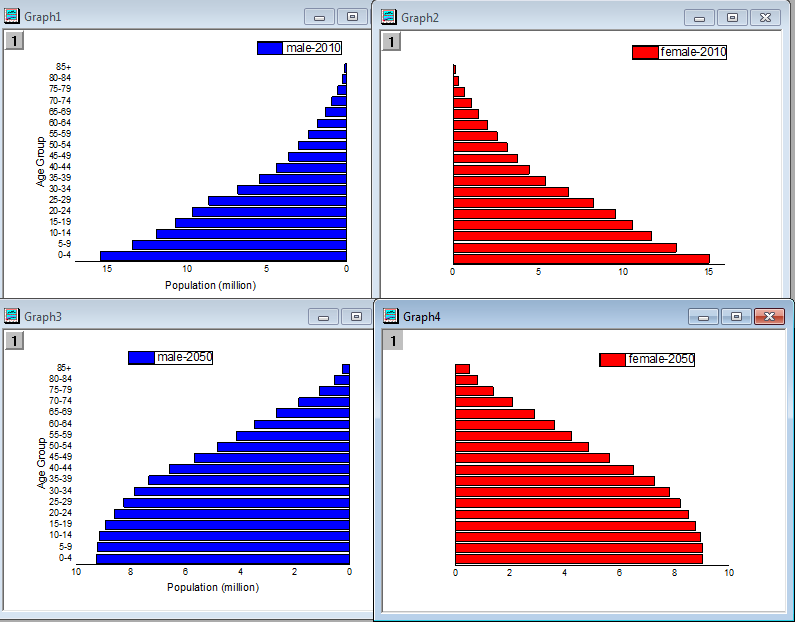
Mehrere Diagramme zusammenfügen
Nun haben Sie vier individuelle Balkendiagramme. Diese vier Diagramme werden nun zusammengefügt und noch ein wenig benutzerdefiniert angepasst, zum Beispiel werden noch Textanmerkungen hinzugefügt.
- Aktivieren Sie eines der vier Diagramme und wählen Sie im Hauptmenü Grafik: Grafikfenster zusammenfügen. Der Dialog merge_graph wird geöffnet. Ändern Sie die Einstellungen wie folgt, um diese vier Balkendiagramme in einem Diagrammfenster zusammenzufügen.
- 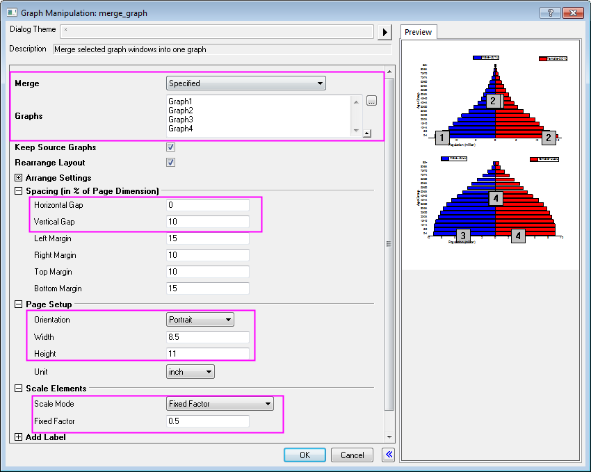
- Ziehen Sie in dem zusammengefügten Diagramm an den beiden (horizontalen) Y-Achsentiteln "Population (million)", um Sie mittig auszurichten. Markieren Sie nacheinander die Legenden der vier Diagramme und entfernen Sie sie.
- Klicken Sie mit der rechten Maustaste auf eine freie Fläche im Diagrammlayer und wählen Sie "Text einfügen". Machen Sie die entsprechende Eingabe, um die vier Textbeschriftungen zu erstellen. Die verwendeten Textbeschriftungen sind:
- Figure 1. African population by five – year age groups and sex, 2010 versus 2050
- 2010
- Males
N=515.267
- Females
N=517.776
- 2050
- Males
N=998.354
- Females
N=1.000.112
- Quelle: Population Division of the Department of Economic and Social Affairs of the United Nations Secretariat,
World Population Prospects: The 2008 Revision, http://www.un.org/en/index.html, Montag, 12. April 2010; 15:19 Uhr.
Wenn Sie möchten, können Sie Position, Schriftart, Farbe und Ausrichtung der neu hinzugefügten Beschriftungen weiter benutzerdefiniert anpassen. Ihr endgültiges Diagramm sollte in etwa wie unten abgebildet aussehen.